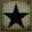
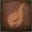
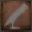

Добро пожаловать в раздел об игре!
Здесь, добрый охотник, ты сможешь раздобыть информацию, которая облегчит твое путешествие по кошмару. Первый раздел посвящен интерфейсу игры, статистикам персонажа и системе уровней. Второй - оружию и боевой системе в целом. В третьем разделе расскажем о локациях и добыче, что находится на их территории. Осторожно, спойлеры!
Игровой интерфейс
- Шкала здоровья
- Шкала выносливости
- Пузырьки крови
- Ртутные пули
- Экипированный предмет
- Отголоски крови
- Уровень озарения
- Индикатор трансформации оружия
- Шкала здоровья - это ваше, как ни странно, здоровье. Когда оно достигает нуля, вы умираете и возраждаетесь у последнего активированного фонаря
- Шкала выносливости - выносливость в игре тратится прежде всего на атаки оружием ближнего боя. Есть два вида атак: легкие и тяжелые, а также заряженные тяжелые. Каждая из них тратит больше выносливости соответственно. Также выносливость тратится на спринт.
- Пузырьки крови - это ваш главный способ лечения, каждый пузырек восстанавливает 40% здоровья. Всего у вас может быть 20 пузырьков (это количество может быть изменено при экипировке специальных рун). Пузырьки вы можете покупать во Сне Охотника, либо находить в игровом мире.
- Ртутные пули - используются прежде всего для оружия в левой руке, огнестрельного, а также магического. Как и пузырьков крови, одновременно их может быть 20 штук. Однако, вы можете ценой собственных очков здоровья в любой момент добавить 5 пуль.
- Экипированный предмет - в этом слоте располагаются предметы, которые выбраны у вас в быстром меню в инвентаре, это могут быть как расходумые коктейли молотова, так и, например, бинокль.
- Отголоски крови - это валюта, которую вы зарабатываете при уничтожении врагов и боссов, а также при продаже предметов или при использовании "кровавой росы". Отголоски используются для покупки расходуемых предметов, брони, оружия и его улучшения, а прежде всего - для повышения уровня.
- Уровень озарения - это показатель вашей способности видеть потустороннее, а также вторая игровая валюта. Повышается при нахождении босса и после победы над ним или же при использовании "Знания безумца". Прежде всего влияет на то, как вы будете видеть некоторые детали игрового мира. Например, чтобы кукла во сне охотника ожила и могла повышать уровень игрока вам нужно 1 озарение. Также может использоваться как валюта для покупки некоторых более сильных предметов.
- Индикатор трансформации оружия - каждое оружие в игре имеет два разных режима. Когда индикатор не горит, то это значит, что оружие в исходной форме. Когда он загорается желтым, значит, что оружие во второй, "трюковой" форме.
Оружие основной игры
Условные обозначения таблицы
 Физический урон
Физический урон Кровавый урон
Кровавый урон-  Урон от тайны
-  Урон от огня
 Урон от молнии
Урон от молнии Урон от медленного отравления
Урон от медленного отравления Урон от быстрого отравления
Урон от быстрого отравления Урон против рода (противников типа "род")
Урон против рода (противников типа "род")
 Урон против чудовищ (противников типа "чудовище")
Урон против чудовищ (противников типа "чудовище") Необходимая сила
Необходимая сила Необходимая ловкость
Необходимая ловкость Необходимый оттенок крови
Необходимый оттенок крови- Необходимая тайна
 Прочность
Прочность-  Использование свинцовых пуль
| Название оружия | |||||||||||||||
|---|---|---|---|---|---|---|---|---|---|---|---|---|---|---|---|
| 50 | - | 30 | - | - | - | - | 100 | 100 | 7 - |
11 C |
- - |
20 A |
600 | 2 | |
| 80 | - | 30 | - | - | - | - | 100 | 100 | 10 E |
12 C |
- - |
- D |
200 | - | |
| 92 | 92 | - | - | - | - | 30 | 100 | 100 | 10 E |
14 D |
12 C |
- D |
120 | - | |
| 98 | - | - | - | - | - | - | 100 | 100 | 9 D |
8 E |
- - |
- D |
250 | - | |
| 105 | - | - | - | - | - | - | 100 | 100 | 16 C |
10 E |
- - |
0 D |
250 | - | |
| 100 | - | 25 | - | - | - | - | 100 | 100 | 20 C |
12 - |
- - |
10 D |
300 | - | |
| 100 | - | - | - | - | - | - | 100 | 100 | 16 D |
12 D |
- - |
- D |
250 | - | |
| 75 | 75 | - | - | - | - | - | 100 | 100 | 8 E |
12 C |
10 E |
- D |
120 | 1 | |
| 85 | 85 | - | - | - | - | - | 100 | 100 | 10 E |
11 D |
9 D |
- D |
180 | 1 | |
| 90 | - | - | - | - | - | - | 100 | 100 | 8 D |
7 E |
- - |
- D |
200 | - | |
| 85 | - | - | - | - | - | - | 100 | 100 | 7 D |
8 D |
- - |
- D |
200 | - | |
| 85 | - | - | - | - | - | - | 100 | 100 | 18 D |
9 D |
- - |
- D |
200 | - | |
| 78 | - | - | - | - | - | - | 100 | 100 | 7 E |
9 C |
- - |
- D |
200 | - | |
| 80 | - | - | - | 40 | - | - | 100 | 100 | 12 D |
8 E |
- - |
- D |
100 | - |
Локации и боссы
Проще всего представить локации в Bloodborne с помощью так называемых надгробных камней. Надгробные камни располагаются во Сне Охотника и позволяют перемещаться между активированными в игровом мире фонарями. соответственно, каждый из надгробных камней объединяет фонари, сконцентрированные в одной из крупных частей Ярнама и его окрестностей. Ниже представляем карту локаций и их иерархию, а также порядок прохождения и более подробную роспись с помощью надгробных камней.
Иерархия локаций и путь основного сюжета
Надгробные камни
Ярнамский надгробный камень
- Палата на 1-м этаже
- Центральный Ярнам
- Большой мост
- Церковное чудовище
- Гробница Идон
- Отец Гаскойн
- Соборный округ
- Главный Собор
- Викарий Амелия
- Верхний Соборный Округ
- Сады светящихся цветов
- Посланник небес
- Алтарь отчаяния
- Ибраитас, дочь Космоса
- Старый Ярнам
- Церковь Доброй Чаши
- Чудовище-кровоглот
- Кладбище Черного Чудовища
- Черное чудовище Паарл
Граничный надгробный камень
- Молельный переулок Хемвик
- Обитель ведьмы
- Ведьмы Хемвика
- Запретный Лес
- Запретная могила
- Тени Ярнама
- Бюргенверт
- Озеро лунного отражения
- Ром, праздный паук
Невидимый надгробный камень
- Яаарг'ул, духовная деревня
- Часовня Яаарг'ул
- Площадь пришествия
- Возродившийся
- Подземная тюрьма
- Покинутый замок Кейнхерст
- Место Логариуса
- Мученик Логариус
- Зал Королевы Нечистокровных
- Старая заброшенная мастерская
Кошмарный надгробный камень
- Лекционный корпус
- Лекционный корпус, 2-ой этаж
- Граница Кошмара
- Зал Амигдалы
- Амигдала
- Кошмар Менсиса
- Хоры Мерго: Нижний ур-нь
- Хоры Мерго: Средний ур-нь
- Миколаш, хозяин Кошмара
- Лунарий Кормилицы Мерго
- Кормилица Мерго